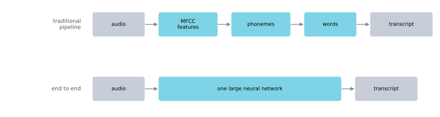
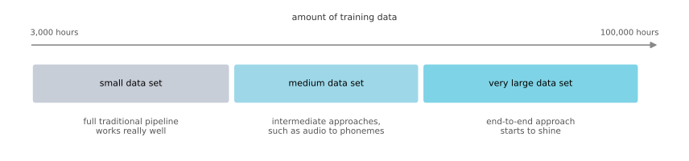
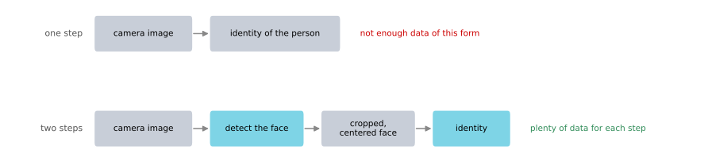
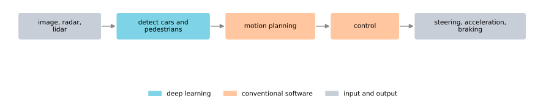

End-to-End Deep Learning
deep-learning
ml-strategy
end-to-end
What end-to-end deep learning replaces, why some systems still work better split into stages, and how to decide whether an end-to-end approach fits your problem.
One of the most exciting recent developments in deep learning has been the rise of end-to-end deep learning. Some data processing systems and learning systems require multiple stages of processing, and what end-to-end deep learning does is take all those stages and replace them, usually with a single neural network. This page looks at what that means in practice and at how to decide whether it is the right approach for your application.
What Is End-to-End Deep Learning?
Take speech recognition as an example, where your goal is to map an input \(x\), an audio clip, to an output \(y\), a transcript of that clip.
Speech Recognition Pipeline
Traditionally, speech recognition required many stages of processing. First you extract some hand-designed features of the audio. If you have heard of MFCC, that is an algorithm for extracting a certain set of hand-designed audio features. Having extracted those low level features, you apply a machine learning algorithm to find the phonemes in the audio clip, which are the basic units of sound. The word “cat” is made out of three of them. You then string phonemes together to form individual words, and string those together to form the transcript.
In contrast to that pipeline, end-to-end deep learning trains one huge neural network that takes the audio clip as input and directly outputs the transcript.
One interesting sociological effect in AI is that as end-to-end deep learning started to work better, some researchers had already spent many years of their careers designing individual steps of these pipelines. That was true not only in speech recognition but in computer vision and other areas as well, where people had written multiple papers and built a large part of their careers engineering features or other pieces of the pipeline. When end-to-end deep learning took the training set and learned the mapping from \(x\) to \(y\) directly, bypassing those intermediate steps, it was challenging for some disciplines to accept this alternative way of building AI systems, because in some cases it obsoleted many years of research on the intermediate components.
Data Requirements
One of the challenges of end-to-end deep learning is that you might need a lot of data before it works well. If you are training on 3,000 hours of data to build a speech recognition system, the full traditional pipeline works really well. It is only when you have a very large data set, say 10,000 hours of data and up to maybe 100,000 hours, that the end-to-end approach suddenly starts to work really well. With a smaller data set the more traditional pipeline works just as well and often works better. You need a large data set before the end-to-end approach shines.
If you have a medium amount of data, there are also intermediate approaches. You might input audio, bypass the hand-designed features, and learn to output the phonemes with a neural network, and then use conventional stages after that. That is a step toward end-to-end learning without going all the way.

Face Recognition Turnstile
Consider a face recognition turnstile, of the kind built by the researcher Yuanqing Lin at Baidu. A camera looks at the person approaching the gate, and if it recognizes them the turnstile automatically lets them through. Rather than swiping an RFID badge to enter the facility, which is how it works in increasingly many offices in China and hopefully more and more elsewhere, you just approach the turnstile and it lets you through.
How do you build a system like this? One thing you could do is take the image the camera captures and learn a function mapping directly from that image \(x\) to the identity of the person \(y\). It turns out this is not the best approach. One of the problems is that the person approaching the turnstile can come from lots of different directions. Sometimes they are far from the camera and appear small in the image, and sometimes they are already close so their face appears much bigger.
What has actually been done to build these turnstiles is a multi-step approach. First you run one piece of software to detect where the person’s face is. Having detected the face, you zoom in on that part of the image and crop it so the face is centered. It is that cropped picture that gets fed to the neural network, which then estimates the person’s identity.

What researchers have found is that instead of trying to learn everything in one step, breaking the problem into two simpler steps, first finding where the face is and second looking at the face and figuring out who it is, lets two learning algorithms each solve a much simpler task and gives better overall performance.
The description of the second step is simplified here. The way it is actually trained is that the network takes two images as input and tells you whether they show the same person. So if you have 10,000 employee IDs on file, you take the cropped image and compare it against all 10,000 of them to work out whether this is indeed one of the employees who should be allowed into the building.
Why does the two step approach work better? There are two reasons. Each of the two problems you are solving is much simpler, and you have a lot of data for each of the two subtasks. For face detection there is a lot of labeled data of the form \(x\), \(y\) where \(x\) is a picture and \(y\) shows the position of the person’s face, so you can build a network that does that task quite well. For the second task there is also a lot of data, since leading face recognition teams have at least hundreds of millions of pictures of people’s faces to compare against each other.
In contrast, if you tried to learn everything at once there is far less data of the form where \(x\) is an image taken from the turnstile and \(y\) is the identity of the person. Because you do not have enough data to solve the end-to-end problem, but you do have enough to solve the two subproblems, breaking it down gives better performance than a pure end-to-end approach. If you had enough data for the end-to-end version, maybe it would work better, but that is not what works best in practice today.
Machine Translation
Take machine translation. Traditionally these systems also had a long, complicated pipeline, where you first take English text, run text analysis on it, extract a bunch of features, and after many steps end up with a translation into French.
End-to-end deep learning works quite well for machine translation, and the reason is that today it is possible to gather large data sets of \(x\), \(y\) pairs where \(x\) is the English sentence and \(y\) is the corresponding French translation. When the pairs are available at that scale, the end-to-end approach works well.
Estimating Bone Age
One last example. Say you want to look at an x-ray picture of a child’s hand and estimate the child’s age. This sounds like a crime scene investigation task, but the typical application is less dramatic. Pediatricians use it to estimate whether a child is growing and developing normally.
A non end-to-end approach would be to look at the image and segment out, or recognize, the bones, figuring out where each bone segment is. Knowing the lengths of the different bones, you then go to a lookup table of average bone lengths in a child’s hand and use that to estimate the age. This approach works pretty well.
In contrast, going straight from the image to the child’s age would need a lot of data to do directly, and that approach does not work as well today, simply because there is not enough data to train the task end to end. Breaking the problem into two steps helps because step one is relatively simple, so you may not need that many x-ray images to segment out the bones, and step two only requires collecting statistics on a number of children’s hands. So the multi-step approach seems more promising, at least until more data becomes available for the end-to-end version.
End-to-end deep learning can work really well, and it can genuinely simplify a system by removing the need to build so many hand-designed components. But it is not a panacea and it does not always work.
Review Questions
1. What does end-to-end deep learning replace in a traditional speech recognition system?
TipAnswer
The whole pipeline of hand-designed MFCC features, phoneme detection, word assembly, and transcript assembly. A single large neural network takes the audio clip as input and outputs the transcript directly, with no intermediate representations that a human designed.
1. You have 3,000 hours of audio. Should you use the end-to-end approach?
TipAnswer
Probably not. At that scale the full traditional pipeline works really well and often works better. The end-to-end approach starts to shine once you have something like 10,000 hours and up to 100,000 hours. With a medium amount of data an intermediate approach, such as learning audio to phonemes and keeping conventional stages after that, is a reasonable middle ground.
1. Why is the face recognition turnstile built as two steps rather than one?
TipAnswer
Because each of the two problems is much simpler on its own, and because there is a lot of data for each of them. Labeled data showing where a face is in a picture is plentiful, and leading teams have hundreds of millions of face images for comparing two faces. Data of the form “turnstile camera image paired with a person’s identity” is far scarcer, so the end-to-end version is starved of exactly what it needs.
1. Machine translation works well end to end while bone age estimation does not. What separates the two?
TipAnswer
Data availability for the full mapping. Large data sets of paired English and French sentences can be gathered, so a network can learn the whole mapping. There are not enough paired hand x-rays and ages to learn that mapping directly, while the subproblems of segmenting bones and looking up average bone lengths each need much less data.
Whether to Use End-to-End Deep Learning
Suppose you are building a machine learning system and trying to decide whether to use an end-to-end approach. Here are the pros and cons, and a guideline for deciding.
Benefits
End-to-end learning lets the data speak. If you have enough \(x\), \(y\) data, then whatever the most appropriate function mapping from \(x\) to \(y\) happens to be, a big enough neural network can hopefully figure it out. With a pure machine learning approach, the network is more able to capture whatever statistics are actually in the data rather than being forced to reflect human preconceptions. In speech recognition, earlier systems had this notion of a phoneme as a basic unit of sound. Phonemes are arguably an artifact created by human linguists, a reasonable description of language but not obviously something you want to force your learning algorithm to think in. If you let the algorithm learn whatever representation it wants, its overall performance might end up being better.
There is less hand designing of components needed. This can simplify your design workflow, because you do not need to spend a lot of time hand designing features and intermediate representations.
Drawbacks
It may need a large amount of data. To learn the \(x\) to \(y\) mapping directly, you might need a lot of paired data. The face recognition example showed that you can often find plenty of data for the subtasks, finding a face in an image and identifying a face once found, while there is much less data available for the entire end-to-end task. Here \(x\) is the input end and \(y\) is the output end, and you need data covering both ends together in order to train these systems. That is also where the name comes from, since you are learning a direct mapping from one end of the system all the way to the other.
It excludes potentially useful hand-designed components. Machine learning researchers tend to speak disparagingly of hand designing things. But if you do not have a lot of data, your learning algorithm cannot gain much insight from a small training set, and hand designing a component is a way to inject human knowledge into the algorithm. A learning algorithm has two main sources of knowledge, the data and whatever you hand design, whether that is components, features, or something else. When you have a ton of data it is less important to hand design things, but when you do not have much data, a carefully hand-designed system lets humans inject a lot of knowledge about the problem, which can be very helpful.
Hand-designed components can be very helpful if well designed. They can also be harmful if they limit your performance, such as when you force an algorithm to think in phonemes when it could have discovered a better representation by itself. So they are a double edged sword, but they tend to help more when you are training on a small training set.
Key Question to Ask
If you are building a new machine learning system and deciding whether to use end-to-end deep learning, the key question is whether you have sufficient data to learn a function of the complexity needed to map from \(x\) to \(y\).
There is no formal definition of that phrase, but intuitively, learning to look at an x-ray image and recognize the position of the bones seems like a relatively simple problem, so it may not need that much data. Given a picture of a person, finding the face in the image does not seem that hard either, so you may not need too much data for that, or at least you can find enough data to solve it. In contrast, looking at a hand and mapping it directly to the age of a child seems like a much more complex problem, so intuitively you would need more data to learn it with a pure end-to-end approach.
Self Driving Car Example
Here is a more complex example. How do you build a car that drives itself? One approach, which is not an end-to-end approach, works as follows.
You take as input an image of what is in front of your car, and maybe radar, lidar, and other sensor readings as well, though to simplify the description say you just take a picture of what is around your car. To drive safely you need to detect other cars and you need to detect pedestrians, along with other things that this simplified example leaves out. Having figured out where the other cars and pedestrians are, you plan your own route, deciding what path to steer your car along for the next several seconds. Having decided on a path, you execute it by generating the appropriate steering, acceleration, and braking commands.

Going from the sensory inputs to detecting cars and pedestrians can be done pretty well using deep learning. But having figured out where the other cars and pedestrians are, selecting the route and deciding exactly how to move your car is usually not done with deep learning. That is done with a piece of software called motion planning, which you would learn about in a robotics course. Having decided on the path, some other algorithm, a control algorithm, generates the exact decision about how much to turn the steering wheel and how much to press the accelerator or the brake.
What this example illustrates is that you want to use deep learning to learn some individual components, and when applying supervised learning you should carefully choose what types of \(x\) to \(y\) mappings to learn based on which tasks you can get data for. It is exciting to talk about a pure end-to-end approach where you input an image and directly output a steering command, but given data availability and what neural networks can learn today, that is not the approach teams have gotten to work best. The pure end-to-end approach is less promising here than the more sophisticated staged approach.
End-to-end deep learning can sometimes work really well, but you also have to be mindful of where you apply it.
Review Questions
1. What are the two main benefits of an end-to-end approach?
TipAnswer
It lets the data speak, so the network can find whatever mapping actually fits the data instead of being forced into a human-designed representation such as phonemes. And it requires less hand designing of components, which simplifies the design workflow.
1. Why can excluding hand-designed components be a disadvantage?
TipAnswer
Because a learning algorithm has two sources of knowledge, the data and whatever a human designs into it. When the training set is small, the data alone does not carry much insight, and a hand-designed component is how human knowledge about the problem gets injected. With a ton of data this matters much less, which is why hand-designed components help most on small training sets.
1. What is the key question to ask when deciding whether to go end to end?
TipAnswer
Whether you have sufficient data to learn a function of the complexity needed to map from \(x\) to \(y\). Locating bones in an x-ray or finding a face in a photo are relatively simple mappings that need less data. Mapping a hand x-ray straight to a child’s age is far more complex, so it demands much more data before an end-to-end approach becomes viable.
1. In the self driving car pipeline, which stages use deep learning and which do not?
TipAnswer
Detecting cars and pedestrians from the sensor inputs is done well with deep learning. Motion planning, which chooses the path for the next several seconds, and the control algorithm, which converts that path into steering, accelerator, and brake commands, are conventional software rather than learned components.
1. Why is a pure end-to-end approach, mapping an image straight to a steering command, not what works best for self driving cars today?
TipAnswer
Because of data availability and the limits of what neural networks can currently learn. You can gather plenty of labeled data for detecting cars and pedestrians, but far less data pairing raw sensor images with correct steering commands across every situation a car encounters. Choosing which \(x\) to \(y\) mappings to learn based on which tasks you can get data for is what makes the staged approach work better.